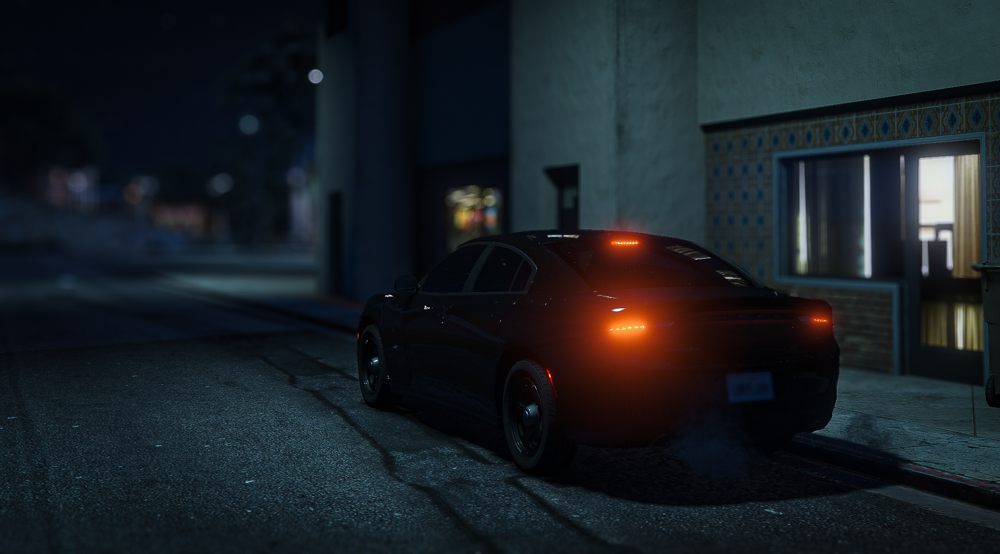

K9 Division
The Ventura County Sheriff's Office K9 Unit plays a vital role in enhancing public safety and supporting deputies in various law enforcement operations.
Comprised of highly trained canine teams, the K9 Unit specializes in tasks that require precision, skill, and a strong bond between handler and dog.
These K9 teams are trained to assist in search and rescue missions, track suspects, detect narcotics and explosives, and help locate evidence at crime scenes.
Each K9 partner undergoes rigorous training to prepare for the demands of police work, including obedience, agility, scent detection, and tactical apprehension.
Handlers and their K9 partners work together daily to ensure their skills remain sharp and mission-ready. The K9 Unit not only serves Ventura County but also assists
neighboring agencies when needed, exemplifying the collaborative spirit of law enforcement.
Beyond their operational roles, the K9 teams are often involved in community outreach, visiting schools, events, and community organizations to demonstrate their skills and educate the public about the value of police dogs.
The K9 Unit symbolizes dedication and teamwork, exemplifying the Ventura County Sheriff's Office’s commitment to keeping the community safe.
Patrol
The Ventura County Sheriff's Office Patrol Division is the backbone of the department's public safety efforts, providing 24/7 law enforcement coverage to both urban and rural areas within Ventura County.
Deputies in the Patrol Division respond to a wide range of calls, from routine incidents to critical emergencies, ensuring a prompt and professional response to the community's needs.
Their primary responsibilities include crime prevention, community policing, traffic enforcement, and emergency response.
Patrol deputies are often the first on the scene, working tirelessly to protect life and property, conduct investigations, and restore order.
They also work proactively to deter criminal activity by building relationships with community members, gaining valuable insights into local issues, and collaborating with residents to solve problems.
The Patrol Division is organized into several stations strategically located throughout the county, allowing deputies to provide rapid response times and localized service to Ventura County's diverse communities.
In addition to their routine duties, patrol deputies receive specialized training in areas such as de-escalation, crisis intervention, and tactical response, equipping them to handle a variety of situations with professionalism and skill.
The Ventura County Sheriff's Office Patrol Division is committed to maintaining public safety and fostering a positive connection with the communities they serve, embodying the values of integrity, respect, and service.
These Deputies are the embodiment of Serve With Integrity Protect With Honor
Speed Interdiction Unit
The Ventura County Sheriff's Office Speed Interdiction Unit (SIU) is dedicated to ensuring the safety of Ventura County’s roadways by targeting dangerous driving behaviors, particularly excessive speeding.
The SIU is a specialized team of deputies trained to address high-speed violations, reckless driving, street racing, and other hazardous traffic offenses that pose significant risks to the community.
The Speed Interdiction Unit’s primary mission is to reduce traffic-related fatalities and injuries by enforcing speed limits and promoting safe driving practices across Ventura County.
Equipped with advanced radar and laser speed detection technology, as well as high-performance pursuit vehicles, SIU deputies are prepared to respond quickly to situations involving speeding vehicles or dangerous driving activities.
In addition to enforcement, the SIU works closely with other divisions within the Sheriff's Office and collaborates with local law enforcement agencies to conduct joint operations targeting areas known for high-speed incidents and illegal street racing.
They also participate in educational outreach initiatives, speaking with community members about the dangers of speeding and promoting responsible driving behavior.
Tactical Response Team
The Ventura County Sheriff's Office Tactical Response Team (TRT) is a highly trained and specialized unit tasked with managing high-risk and complex situations that go beyond the scope of traditional law enforcement capabilities.
This elite team is prepared to respond swiftly to incidents such as armed standoffs, hostage situations, counter-terrorism operations, high-risk warrant services, and other critical incidents that require specialized tactics and equipment.
The TRT is composed of deputies who have undergone rigorous selection and training processes. Each member is extensively trained in areas such as advanced firearms handling, breaching techniques, tactical driving, negotiation strategies, and high-stakes decision-making.
These deputies are equipped with advanced gear and technology to ensure they can effectively resolve dangerous situations while prioritizing the safety of civilians, officers, and suspects.
One of the primary objectives of the TRT is to bring potentially violent encounters to a peaceful resolution whenever possible. To support this goal, the team often works closely with the Crisis Intervention Team and crisis negotiators to de-escalate situations, reducing the need for force.
The Tactical Response Team also conducts regular training exercises to ensure they remain prepared for a wide array of scenarios, adapting to evolving threats and challenges in modern law enforcement.
Narcotics & Criminal Intelligence Unit

The Ventura County Sheriff's Office Narcotics and Criminal Intelligence Unit is an elite team of highly skilled deputies who conduct some of the most sensitive and high-risk operations within the department.
Specializing in undercover assignments, these deputies are tasked with infiltrating criminal organizations involved in narcotics trafficking, organized crime, and other illicit activities that threaten the safety and well-being of Ventura County residents.
Given the nature of their work, members of the Narcotics and Criminal Intelligence Unit operate under strict confidentiality to protect both their personal safety and the integrity of their operations.
Their identities are kept secret from the public, allowing them to engage in covert investigations without compromising their effectiveness or risking exposure.
These deputies are trained to handle high-stakes scenarios, often putting themselves in dangerous situations to gather critical intelligence, disrupt drug networks, and dismantle criminal enterprises from within.
Their undercover work is essential to identifying and apprehending key players in organized crime, as well as intercepting illegal substances before they reach the streets.
Despite the inherent risks, these deputies remain steadfast in their commitment to protect the community, upholding the highest standards of integrity and professionalism as they work behind the scenes to keep Ventura County safe.
Remote Operations Unit/Search & Rescue
The Ventura County Sheriff’s Office Remote Operations and Search and Rescue (SAR) unit is a specialized team dedicated to responding to emergencies in some of the county’s most challenging and inaccessible areas.
From the rugged mountains to vast open spaces, Ventura County’s diverse landscape requires unique skills and equipment to conduct rescues and recoveries effectively.
The SAR team consists of highly trained deputies and volunteers who are prepared to tackle various scenarios, including lost hikers, stranded climbers, water rescues, and disaster response.
Equipped with specialized tools, such as off-road vehicles, drones, and climbing gear, this unit is always ready to operate in environments where standard emergency services may be limited or ineffective.
The unit is committed to public safety and is on-call 24/7, prepared to mobilize quickly in response to any emergency.
The SAR team’s training includes advanced navigation, wilderness survival, swift water rescue, and medical aid, enabling them to save lives even in the most adverse conditions.
Through rigorous preparation and a dedication to serving the community, the Ventura County Sheriff’s Office Remote Operations Unit and Search and Rescue team plays a vital role in protecting and supporting Ventura County’s residents and visitors.